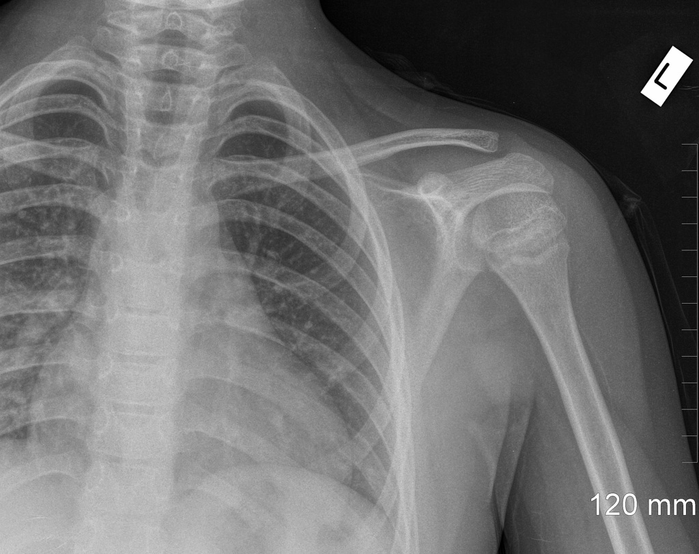

Hombro
"La cirugía artroscópica o abierta del hombro se realiza con la finalidad de disminuir el dolor, tener mejor calidad de vida, mejorar las actividades de la vida diaria y volver al trabajo o al deporte" Dr. Sidney Gómez
Bienvenidos
Esta es la página personal del Dr. Sidney Gómez, traumatólogo especialista en lesiones de hombro y rodilla. En esta página podrás encontrar información sobre las lesiones más comunes de hombro y rodilla, su tratamiento, además de información de citas y operaciones.
Adscrito a